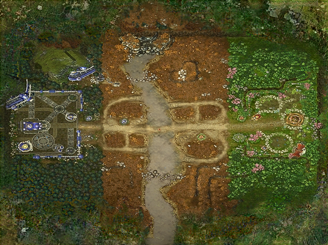

玩法模式
不同模式拥有不同的目标链、兵线、野怪、胜利条件和经济参数；不再把每项配置误当成一张新地图。

先分清楚：地图不等于玩法模式
一张地图可以复用多种模式；模式定义胜负目标和特殊规则，地图提供路线、建筑、野怪等空间内容，配置又可能覆盖人数和数值。
| 层级 | 回答的问题 | 例子 |
|---|---|---|
| 玩法模式（Game Mode） | 怎么玩、怎样赢、几个人 | 经典 5v5、龙林夺蛋、合作试炼 |
| 场景地图（Battle Map） | 地形、道路、塔、野怪与位置 | 边境之地、龙林、前哨 |
| 规则配置（Mode Config） | 哪套时间、人数、强度、奖励参数 | 前哨与滴答共享地图却有不同时间配置 |
注：83 项描述并不意味着 83 种公开玩法；“允许生产使用”是仓库中的开关，不是历史实际开服证明。查看去重统计依据
选择玩法模式
可以筛选 PvP／PvE／教学与规则变体。每个详情页先讲目标，再讲地图单位、时钟、经济和计算公式。

经典边境之地
BORDERLANDS三条兵线推进，经营局内 Prime，争夺旗杆与野区目标；摧毁敌方基地核心获胜。
查看规则、数值与算例 ↗
前哨
OUTPOST一条主兵线展开集中交战。建筑链较短，但单座塔的基础生命不等于经典塔。
查看规则、数值与算例 ↗滴答
TICK TOCK复用前哨场景，服务时间倍率为 2，并存在其他配置差异。不能假设所有时钟均精确缩短为一半。
查看规则、数值与算例 ↗龙林
DRAGONWALD迷宫打野成长、争夺中央巨龙，龙死后通过夺蛋和护送载蛋单位破坏敌方祭坛。
查看规则、数值与算例 ↗故土
HOMELAND复用经典战场，但站在己方土地上会获得额外战斗状态，争旗直接影响交战强度。
查看规则、数值与算例 ↗末日
APOCALYPSE保留经典推进目标；符合条件的击杀会生成己方的丧尸或更强的末日单位。
查看规则、数值与算例 ↗英雄互换
SWITCHEROO队内玩家与英雄的对应关系在开局被打乱。改变的是本队已有英雄的归属，不是全角色池随机抽签。
查看规则、数值与算例 ↗新年边境
NEW YEAR独立季节摆放场景，保留三路塔营核心关系，部分怪物与美术被替换。
查看规则、数值与算例 ↗联赛与演习
LEAGUE & SCRIM青铜、白银、黄金联赛和演习复用经典场景，入口、队伍、匹配或评级约束不同。
查看规则、数值与算例 ↗愚人节
APRIL FOOLS脚本尝试把英雄设置成 36 级并遍历天赋盘；英雄打乱文字与正式开关有矛盾，须保留疑点。
查看规则、数值与算例 ↗
合作试炼
CO-OP TRIAL保护伊娃，在四向压力下充能并发动三次神器爆发，最后击败三头龙首领。
查看规则、数值与算例 ↗
单人试炼
SOLO EPISODE救援据点、探索并补强防御、守城充能，包含宠物、巢穴、塔维修和剧情支线。
查看规则、数值与算例 ↗人机练习
TRAINING VS AI用经典空间与兵线结构对抗 AI，反复练习对线、技能、天赋、推进。
查看规则、数值与算例 ↗
初次进攻与推进攻势
TUTORIAL分阶段教移动、普攻、天赋、补刀、拆塔、传送、商店和升旗；两章共享专用教学场景。
查看规则、数值与算例 ↗模式参数横向对照
| 模式 | 人数 | 场景 | 开局 Prime /队 | 标准发薪 /次 | 主要获胜条件 |
|---|---|---|---|---|---|
| 经典边境之地 | 5v5 | 经典边境之地 | 2000 | 4 | 拆除至少一路塔链与兵营，最终摧毁敌方核心 |
| 前哨 | 3v3 | 前哨 | 2100 | 15 | 推进单线，破塔、破兵营、摧毁核心 |
| 滴答 | 3v3 | 前哨 | 未在本摘要单独确认 | 需看配置继承 | 按单线模式推进敌方核心 |
| 龙林 | 4v4 | 龙林 | 2000 | 2 | 敌方祭坛生命降至终结阈值 |
| 故土 | 5v5 | 经典边境之地 | 1500 | 2 | 按经典三路模式摧毁核心 |
| 末日 | 5v5 | 末日边境 | 1500 | 2 | 通过英雄和转化军团推进并拆毁核心 |
| 英雄互换 | 5v5 | 经典边境之地 | 1500 | 2 | 仍沿经典三路摧毁核心 |
| 新年边境 | 5v5 | 新年边境 | 未在本摘要单独确认 | 需看配置继承 | 仍以摧毁核心为胜利条件 |
| 联赛与演习 | 5v5 | 经典边境之地 | 未在本摘要单独确认 | 需看配置继承 | 经典三路摧毁核心 |
| 愚人节 | 5v5 | 经典边境之地 | 未在本摘要单独确认 | 需看配置继承 | 沿经典场景推进核心 |
| 合作试炼 | 5人合作 | 合作试炼 | 1500 | 2 | 伊娃存活、三次爆发并击败最终首领 |
| 单人试炼 | 1人 | 单人试炼 | 375 | 0 | 完成剧情阶段与防守、神器事件 |
| 人机练习 | 5v5槽位 | 经典边境之地 | 2000 | 4 | 练习典型对战流程；战斗目标仍为经典建筑链 |
| 初次进攻与推进攻势 | 单人+AI | 专用教学 | 未在本摘要单独确认 | 需看配置继承 | 按分段任务完成一局的关键玩法操作 |
完整原版入口
保留原有 83 项配置和 25 个场景逐项来源。按下面入口可核对包括开发测试、历史模式、运营开关的完整记录。